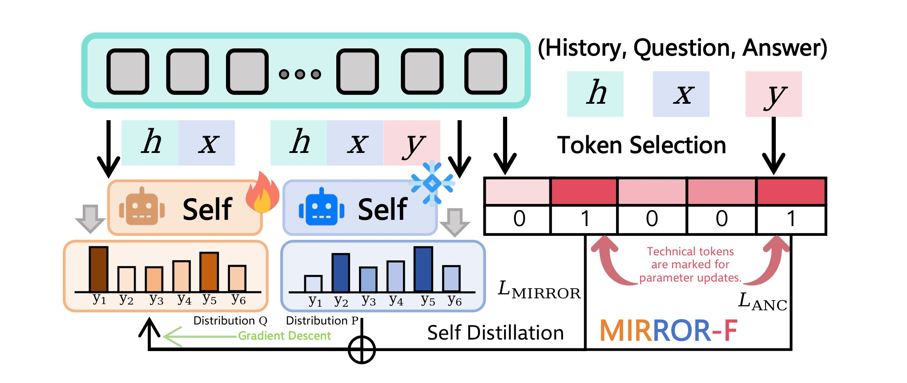
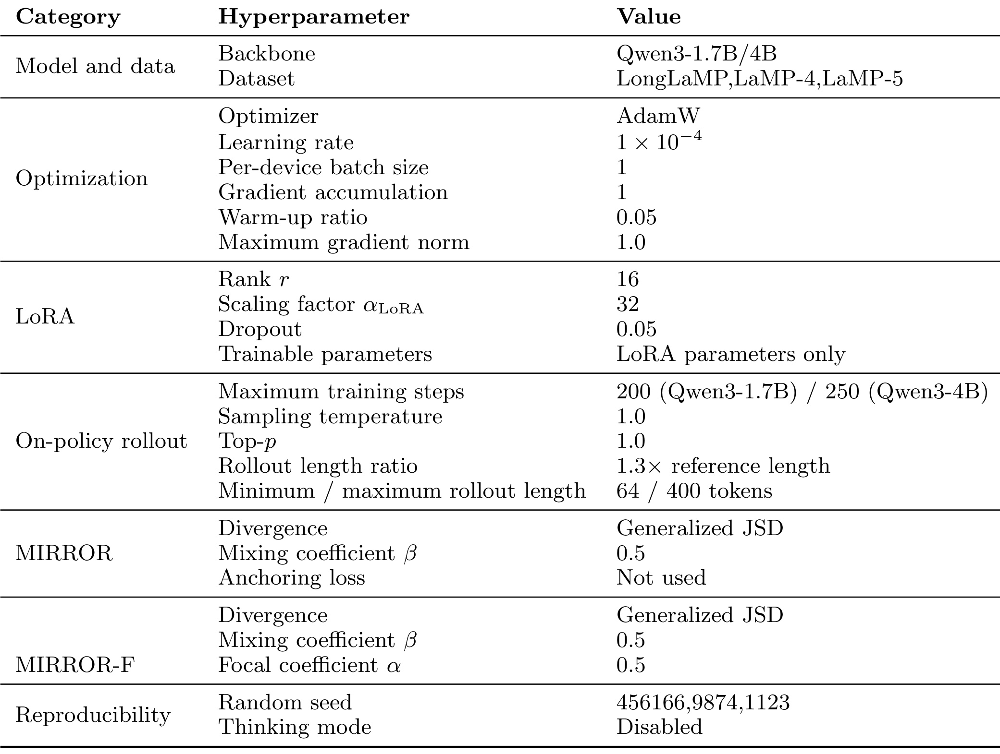
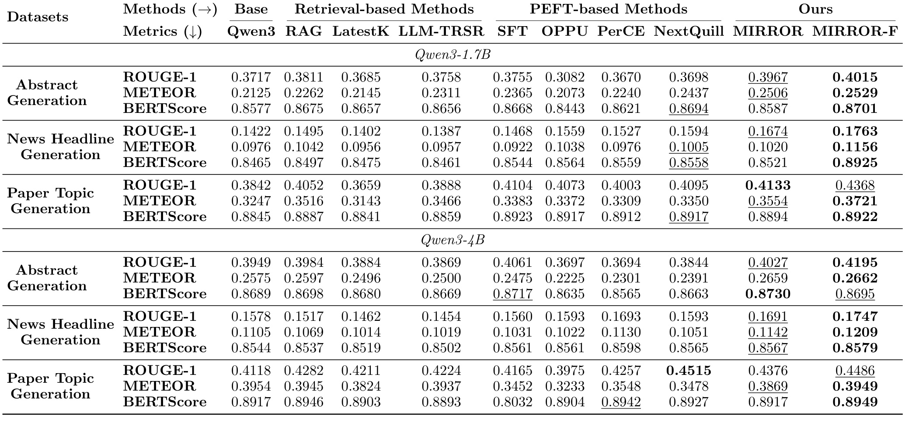
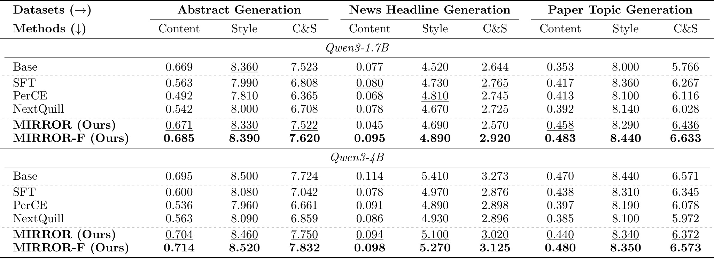
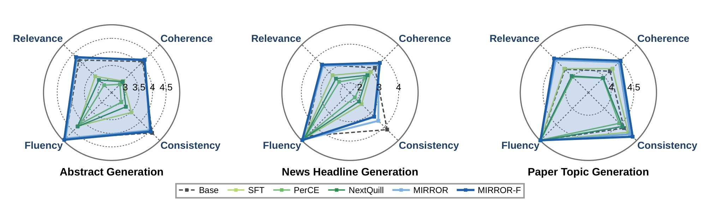
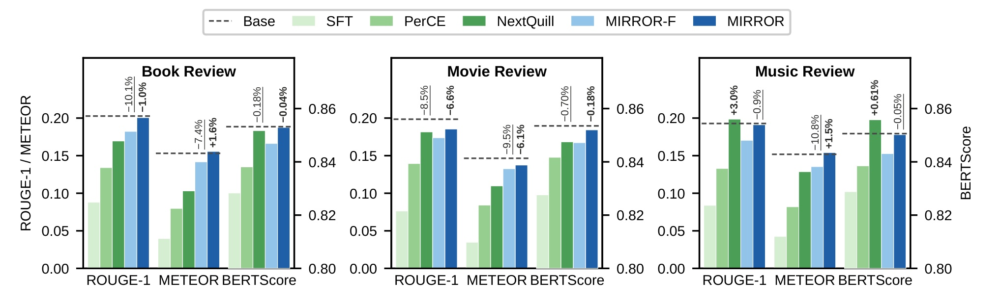
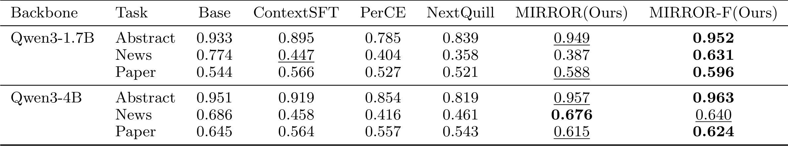
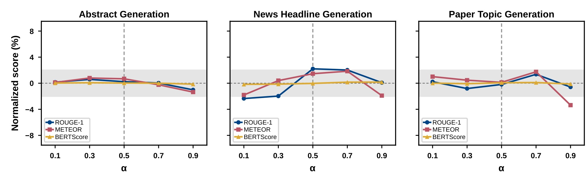
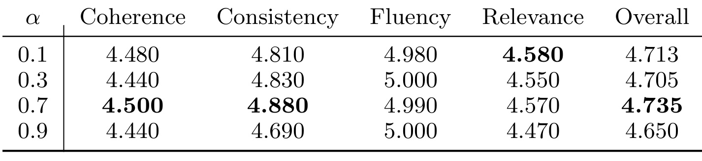
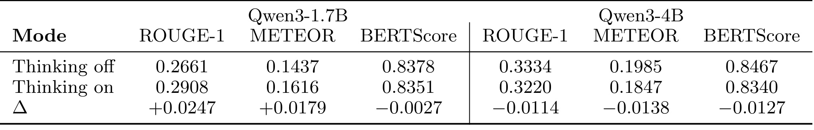

百度-MIRROR：让参考答案揭示偏好，再沿自己的生成轨迹内化
MIRROR: From Imitation to Internalization in LLM Personalization研究如何把用户参考揭示的表达与内容偏好，通过沿模型自身生成轨迹的自蒸馏传给可部署学生，再选择性锚定重要且上下文可见的参考词。作者为Huayi Lai、Jicheng Yang、Min Yi、Chong Meng，前两位共同第一作者，第一作者主要机构为Baidu Inc.（百度）。论文于2026-10-07 10:10:01 UTC首发，本篇笔记日期为2026-10-09，Asia/Shanghai；唯一论文入口为arXiv:2610.09795。本轮未核验到独立官方代码或项目入口，以下解读依据完整36页PDF。
如何在加强对用户特有表达风格建模的同时，维持个性化文本生成的质量与有效性？
1. 背景和问题
论文把个性化从“写得像某个人”推进到“用这个人喜欢的方式，正确且完整地完成当前任务”。两者之间有真实冲突：用户历史提供的是过去的语言行为，其中既包含语气、句式、篇幅，也包含当时的事实与主题；一个模型可以把历史表达模仿得很像，却漏掉新任务的关键细节。科研摘要、新闻标题和论文标题正好把这种冲突放大：用户偏好简短的第一人称摘要，并不等于允许模型删除方法条件；偏好某种标题模板，也不意味着当前新闻的组织、地点和事件主体可以被模板取代。作者要优化的因而是表达偏好与内容有效性的联合表现，而不是单独提高对一个参考文本的重合率。作者区分了两种成功标准：过去偏好的表达方式应当得到尊重，当前输入明确要求的信息也应当保留。若只观察用户风格相似度，后者的损失可能被掩盖；如果只评价一般文本质量，又可能忽略用户为何需要个性化。因此问题本身要求同时测量内容、风格以及训练后对其他任务的保持。
论文把样本表示为当前问题、用户历史和用户实际写出的参考回答。历史在推理时可用，当前参考回答在推理时不可用。这种信息边界决定了所有方法的合理性：训练可以借用答案理解用户想表达什么，但部署时不能把正确答案塞进输入，宣称个性化已经解决。科研摘要任务由标题和若干要点生成摘要，历史是用户过去的论文标题与摘要；新闻标题任务由新闻正文生成短标题，历史是用户过去的新闻正文与标题；论文主题任务实际上是由学术摘要生成论文标题，不能误解为主题分类或推荐候选排序。三个任务都要求模型把历史偏好迁移到新的输入，而不是返回某篇旧文的复述。
作者首先梳理检索增强、监督微调和用户专属参数三类范式。检索增强把相关历史拼到问题旁边，训练成本低，却主要依靠上下文触发偏好；它没有直接改变模型解释历史的能力，也要持续处理历史长度、检索相关性和敏感信息。监督微调通过教师强制，把每一步参考词变成标准答案，容易学习风格和固定表达，但一个问题本来可能有多个正确回答，这种损失会把其中一种措辞提高到唯一目标的位置。用户专属适配器、注意力调整或操纵向量进一步显式编码个体，代价是用户规模增长时参数管理和训练存储开销随之增长。这些分类是论文的研究动机，不能当作已经证明所有检索或适配方法都必然表现不佳。
传统监督学习的第二个局限是状态错位。训练时模型看到参考回答已经写好的前缀，部署时却看到自己先前生成的前缀；一旦模型选了同义词、调整了信息顺序或省略了某个短语，后续位置便偏离参考路径。仅给某些参考词更大的权重，只改变哪些词的误差更重要，没有改变模型接受监督时所处的轨迹。因此，“偏好词加权”能够强调用户常用表达，却未必教会模型在自己实际走到的状态中作出恰当选择。MIRROR最关键的改变就是同时调整监督目标和监督状态：由单一参考词转向下一词的概率分布，由参考前缀转向模型自己生成的前缀。
参考回答在这里被重新解释为训练阶段的事后信息。把它提供给模型，相当于让同一个模型先看到一个具体例子，理解当前用户在这一问题上的内容取舍和表达偏好，再评估学生已经走到的前缀接下来该如何继续。教师不一定更大，也不来自另一个已训练好的专门系统；它的优势来自额外可见的信息。学生只看历史与问题，教师多看参考答案，二者在相同生成前缀上的分布差别，就成为偏好监督的来源。这个设计的意义在于，参考可以指导概率如何重新分配，而不必要求学生逐字复刻参考。它仍依赖参考质量，并未凭空产生用户的真实意图，也不保证教师知道的每一项内容都能被学生可靠内化。
“内化”也需要谨慎理解。论文中的部署模型仍读取用户历史，不能把标题理解为训练完后已经可以完全丢弃历史、只凭用户编号记住所有偏好。参数学习改善的是从历史推断与使用偏好的行为，而不是证明模型把每个用户的长期身份编码成独立永久记忆。论文没有测试用户撤回历史后的遗忘、敏感数据删除或训练数据泄露，因此不能从“不需要外部教师”推出隐私风险消失。这里最直接的价值，是把训练监督限制在一个部署可用的输入结构中，使教师的信息优势只出现在学习阶段。
MIRROR-F接着处理分布监督的一个弱点：整体概率对齐不一定足够强调术语、实体、数字这些决定可用性的少数内容词。用户可以接受多种句式，但不能接受方法名写错、地点被替换或者样本量被编造。作者于是添加选择性锚定，只对参考中既有信息性又在学生上下文出现的词给予额外监督。这不是给全文重新加一次普通监督微调，而是把稀疏事实承载位置单独挑出来。值得注意的是，这里的“有据”只意味着完整词在上下文中出现，不是语义蕴含，也没有判断某个数字与哪一个实体相关。因此，这个机制为内容保护提供一个简单可解释的起点，而不是完整的事实验证器。
从推荐系统研究角度，这篇论文属于个性化大模型交叉方向，但证据来自文本生成，不包含点击率、排序质量或线上推荐收益。它对个性化解释、摘要和助理回复有直接相关性；要用于用户兴趣建模或生成式推荐，仍须额外定义候选信息、行为反馈和部署可见状态。论文的亮点在于监督信号设计，尤其是如何让参考作为特权信息教会模型调整行为，而不是提供一套已验证的推荐排序算法。保留这个边界，才不会把相邻领域的启发误写成已经获得的业务结论。
2. 方法
2.1 MIRROR：参考揭示后的自蒸馏
符号解释： 这里的模型参数为$\theta$，$y_t$是参考回答第$t$个词元，$T$是参考长度，$\omega_t$是该位置的权重，$c_S=(h,x)$由用户历史$h$和当前问题$x$组成，$y_{<t}$是参考前缀。普通监督微调令所有权重为一，偏好加权方法则调整权重。输入是部署可见的历史和问题，输出是在参考前缀条件下预测参考词的概率。它优化的是对参考路径的复现，既没有让学生使用自己的生成前缀，也没有表达多个可接受词之间的概率关系。这个基线解释了为什么MIRROR不能仅被理解为一种新的词权重。 MIRROR首先把同一模型放到两种上下文中。在每个更新步骤，当前学生依据部署上下文生成一个回答，然后教师与学生都沿这个回答的前缀计算分布：
符号解释： 其中$p_t^T$是教师的下一词分布，$p_t^S$是学生分布，$\hat y_{<t}$是学生采样的前缀，$c_T$额外包含用户参考回答$y$，$\operatorname{sg}$表示停止梯度。教师提示还要求模型理解参考后独立解决问题，参考因而改变教师的条件分布，却不是教师必须逐字输出的标签序列。教师是当前参数的停止梯度副本，更新下一步后会跟随当前模型重新计算；不是永久冻结在初始化时刻的旧教师。 原图中的冰冻图标表示本次损失不反传到教师分支，不能据此推断训练全程使用固定初始参数。 两种分布通过广义Jensen–Shannon散度比较：
符号解释： $P$和$Q$是在同一词表上的两个分布，$M$是其混合分布，$\beta$控制两项相对权重，$D_{\mathrm{KL}}$表示KL散度。实验固定$\beta=0.5$，形成对称比较，避免额外引入教师与学生的方向性。它在自然对数下上界为二元熵，最大不超过$\log 2$，所以即使两分布支持集不相同也能有限比较。这里的端点不是正向或反向KL：当$\beta=0$或$\beta=1$时，对应JSD退化为零。 这与某些“混合正反KL”的损失不是一回事；论文明确没有宣称对称设置最优，也未系统研究其他混合系数。 原文的核心训练目标是停止梯度采样上的替代目标：
符号解释： $\mathcal D$是训练数据集，$\hat y$是当前学生采样的回答，$|\hat y|$是回答长度。每个位置的分布误差沿回答长度取平均，再对样本求期望。学生分布承接梯度，教师分布和离散采样结果均停止梯度。附录第三十页专门澄清，这不是把含参数采样分布的期望完整求导：它不包含分数函数梯度、不使用REINFORCE，也没有独立滞后的行为策略。因此“同策略”描述的是监督前缀来自当前学生所访问的状态，并不表示作者在做完整的策略梯度优化。这样的实现减少离散采样梯度带来的方差，但它是所写期望的替代梯度，理解与复现时必须保留这一点。
一个步骤的实际流向是：历史与问题进入学生，学生随机生成回答；参考与相同历史问题进入当前自教师；两分支在学生回答的每个前缀上输出整个词表的概率；对齐损失反传更新学生的可训练参数；下一步以更新后的模型重新采样。若模型自己先选择了与参考不同但合理的措辞，教师仍要评估这个已发生的前缀，这正是对齐训练和部署状态的价值。代价也明确：每一步不仅要采样，还需要两个条件上下文下的分布计算，不能因为没有额外大教师就写成训练成本与普通监督学习相同。论文未给出端到端吞吐或显存成本表，成本优势需要后续测量。
输入裁剪和提示结构同样影响监督语义。完整历史按时间顺序排列，超出预算时优先保留近期记录，当前问题尽可能完整保留；学生训练提示与完整历史推理提示一致。参考只放到教师上下文，部署不提供参考。采样温度和top-p均为一，长度根据参考长度和任务上限确定；出现结束符时保留结束符并丢弃其后内容，长度达到上限但没有结束符的样本会记录诊断，少于两个完成词元的样本跳过。参考长度在训练中可用，它参与训练预算，不意味着线上系统知道目标回答的长度。这些细节把方法限定为可部署的条件生成，而不是答案泄露的上下文评测。
2.2 MIRROR-F：选择性有据锚定
MIRROR-F保留前述分布对齐，再从参考中挑出少量内容位置，用参考前缀做辅助监督。它的输入增加的是训练用参考和选择掩码，而不是部署提示的新字段。作者先在词级或近似词组级别判断，再把选择结果扩展到所有子词位置，避免一个术语被分成几个词元后只监督其中任意片段。分组依据分词器的空白标记，既不是命名实体识别器，也不是句法分析器；标点可能和词组一起被扩展。这个实现细节影响实际掩码，不能只根据论文示例想当然地把它改成理想的英文单词分割。 原论文第八式的信息性规则为：
符号解释： $w$是去除非字母数字字符后的词组核心，$D$判断是否含数字，$U_{\mathrm{inner}}$判断首字符后是否还有大写字符，$U_{\mathrm{first}}$判断首字母是否大写，$B$是停止词集合，$\mathbf 1$为指示函数。数字、缩写、混合大小写产品名和首字母大写的内容词是候选。长度不足二的核心先排除，所以孤立的一位数字不会自动入选。停止词只约束首字母大写分支，并不是对所有候选统一剔除。初步规则偏向英语表面形式，普通小写专业名词可能漏掉，标题式大写又可能让普通词入选。 候选还必须能在学生上下文的词集合中找到：
符号解释： $V(c_S)$来自对历史和问题提取的完整词字符串集合，$g_j$是第$j$个近似词组的全部子词位置，$T_{\mathrm{sel}}$是最终监督位置集合。匹配不区分大小写，却必须匹配完整提取字符串，不能把“ID”因为出现在另一长词的子串中就算有据。参考侧去标点、上下文侧保留内嵌连字符和撇号，导致某些连字符术语不会自动对上；没有词干还原、同义词匹配或实体链接。只有参考里出现不够：参考中的地点如果历史和问题都没有，就不会获得辅助锚定。 但词存在不代表该词在当前断言中被正确使用，词汇有据依然弱于事实有据。 选中的位置用以下损失监督：
符号解释： $m_t$是选择掩码；分母按选中词元数量归一化，空集合时分子为零，损失也为零。与分布对齐不同，这一分支使用参考前缀，因此它确实保留了局部教师强制。未选中的参考词仍出现在前缀里，只是不在自身预测位置上收到直接锚定损失；不能把稀疏损失误解为整个参考只有选中词被模型看见。终止词明确不进入选择掩码。这个设计保护的是少量内容承载词的生成概率，让整体风格和多种有效表达继续主要由轨迹分布对齐控制。

Figure 2把两条监督路径画到同一结构里。左边的学生只看历史与问题，教师额外看答案；两者沿相同的学生轨迹产生分布，误差更新学生。右边把历史、问题、答案送入词选择规则，生成零一掩码，再把选中内容位置的监督与分布对齐相加。冰冻标记对应教师分支停止梯度，火焰标记对应学生可训练，而非两个永久不同参数的模型。图中的选词说明是对象本身的标注，表达技术词被特别更新；真正实现还要求词在学生上下文出现。这个额外条件让图中看起来简单的“挑技术词”变成“挑上下文可见的重要词”，从而降低直接教学生复制参考独有信息的风险。两路输入的不同前缀也很重要：分布路径用学生前缀，锚定路径用参考前缀，二者不能混写成一个完全同策略的损失。 两条损失量级不同，作者分别维护幅值的指数移动平均，再混合：
符号解释： 这里$k$表示两种损失，$m_k$是移动平均幅值，$\gamma$是平滑系数，$\epsilon$防止除零，$\alpha$控制锚定相对贡献。主实验设$\alpha=0.5$，含义是归一化后均分权重，并非未经归一化的原始损失各占一半。没有选中词时，附录明确不更新锚定移动平均，并把该样本有效系数置零，使用归一化对齐项单独更新。正文把$\alpha=0$称作退化为MIRROR，但在严格数值复现中须注意归一化缩放与原始MIRROR损失的区别；它保证对齐机制相同，并不能仅凭公式声称每次梯度数值与原始目标完全一致。$\alpha$增大也不保证内容单调变好，实验展示过强锚定会损害质量。
附录给出的受控例子帮助理解规则，却不是额外的实证数据。问题出现治疗缩写、人数和城市时，相应参考词可以同时满足信息性和有据条件，参考独有的另一个城市被排除；新闻中的品牌、混合大小写产品名及地点可以被选中，而一个上下文没有出现的动词不能被选中。学术标题中的相邻技术词可被分别选中，组合成一个多词概念，但这不表示选择器理解整个概念的关系。作者提出未来可用小模型、领域词表或用户质量要求改进选择器，当前实验没有采用这样的学习式标注模块。部署时MIRROR-F与MIRROR完全相同，仍是历史与当前问题，既没有参考，也没有选中词列表。
3. 实验结果
3.1 三个任务、两个规模与主结果
实验的域内任务是LongLaMP的摘要生成，以及LaMP-4新闻标题生成和LaMP-5论文标题生成，底座是Qwen3-1.7B与Qwen3-4B。比较对象包括无个性化底座、RAG、LatestK、LLM-TRSR，以及SFT、OPPU、PerCE、NextQuill等参数高效方法。不同类别并非只在有无训练上不同，历史选取、摘要和参数方式也有差异，读表时应把比较视作作者所实现配置下的端到端结果。原文称训练与评估均做上下文裁剪和数据过滤，以减少输入分布差异，但未在主文给出可直接用于独立复现的完整数据统计表。结果来自三次不同随机种子训练的算术平均，不等于已经给出了每一个差异的统计显著性证明。

Table 9表明两方法在受控比较中共享底座、数据、优化和采样设置，只改变训练目标。采用AdamW，学习率为万分之一，每设备批量和梯度累积均为一，预热比例百分之五，梯度裁剪阈值一；LoRA秩十六、缩放三十二、丢弃率百分之五，仅更新LoRA参数。小模型训练二百步，大模型二百五十步。采样温度与top-p为一，长度比例为参考的1.3倍，表中最小最大预算为六十四与四百词元，实际还遵循提前结束和极短完成跳过规则。主比较的JSD系数与焦点系数都固定为0.5，默认关闭思考模式。该表支持“目标函数的受控差异”，却没有给出训练耗时、额外前向的开销或用户规模扩展的资源需求，不能从少量训练步数推导部署成本已经充分验证。
主指标是ROUGE-1、METEOR和以roberta-large计算的BERTScore。前两者偏向词面重合和对齐，后者引入语义表征，但仍都是相对单一参考的测量。三个任务的输出长度不同，不能直接比较哪个任务的绝对分值更高就宣称个性化程度更强。尤其论文标题相对短，保留核心技术词对重合率的影响会很大；摘要的合法表述更多，一条合理的新摘要可能不完全接近参考。

Table 1中，1.7B摘要ROUGE-1由NextQuill的0.3698提高到MIRROR-F的0.4015，新闻标题由0.1594提高到0.1763，论文标题由0.4095提高到0.4368；三任务METEOR分别为0.2529、0.1156和0.3721，均体现较强参考对齐。4B摘要ROUGE-1为0.4195，高于SFT的0.4061与MIRROR的0.4027；新闻标题为0.1747，高于PerCE的0.1693。例外不能忽略：4B论文标题NextQuill的ROUGE-1为0.4515，高于MIRROR-F的0.4486；4B摘要BERTScore以MIRROR的0.8730更高，MIRROR-F为0.8695；4B新闻BERTScore的PerCE为0.8598，也高于MIRROR-F的0.8579。这说明选择性锚定总体有竞争力，但未形成所有任务和指标上的统一支配，论文的“领先整体表现”不能改写成逐格全部最好。
另一个值得关注的细节是，1.7B论文标题的SFT BERTScore为0.8923，MIRROR-F为0.8922，差距极小；相比之下ROUGE-1和METEOR的增益更明确。把这些指标合并成一句“语义质量全面改善”会掩盖它们度量的不同属性。对于希望迁移该机制的研究者，第一步应该保留分指标结果，再讨论哪个维度与业务目标一致，而不是只展示最有利的一列。
3.2 内容、风格与域外遗忘
论文用两种LLM裁判协议补充相似度指标。参考式ExPerT协议提取参考与候选的内容及风格方面，衡量参考揭示的内容是否保留、表达是否接近；无参考G-Eval只看任务输入和候选，分别评估连贯性、一致性、流畅性、相关性。所有裁判使用Qwen3-30B-A3B，温度零、默认关闭思考、最大输出五百一十二词元，用共同样本交集保证方法在同题上比较，通常每任务一百个共同样本。温度零提高重跑确定性，却不能消除裁判的风格偏差或模型家族偏差。

Table 2里1.7B的MIRROR-F在摘要、新闻标题、论文标题的内容风格综合分分别为7.620、2.920、6.633，均高于表中SFT、PerCE、NextQuill。4B对应7.832、3.125、6.573，也高于这些已训练对比方法。这里“高于已训练方法”的限定非常重要：4B新闻无个性化底座综合分3.273高于MIRROR-F的3.125，底座内容分0.114也高于0.098，风格5.410高于5.270；4B论文标题底座综合6.571与MIRROR-F的6.573几乎相同。MIRROR本身在1.7B新闻的内容分只有0.045，低于几个监督基线。结果支持MIRROR-F在该评价中修补某些薄弱项，不支持所有用户、任务和规模上个性化一定比底座好。内容和风格分的数值范围也不同，不能把两列原始数直接按同量纲理解。

Figure 4的三张雷达图展示两方法在连贯、一致、流畅和相关维度上优于若干监督微调方法，尤其流畅性已接近较高区间，差异更多来自内容组织和相关性。无参考裁判不会因为文本没有复制某个参考句式就直接扣分，所以它与Table 1、Table 2相互补充。图没有逐点数字表或置信区间，因此这里只解释曲线形态，不从低分辨率刻度猜测精确增益。三个子图的径向尺度也不相同，面积无法跨任务直接比较。该证据说明作者的质量改善不是只在词面重合指标出现，但它仍来自同一个自动裁判，不能替代人类用户对真实性与偏好满意度的盲评。三个子图都把流畅性放在左下、相关性放在左上、一致性放在右下、连贯性放在右上，可以沿同一维度分别比较模型，而不能只看包围面积。新闻标题中底座的一致性并不差，这与参考式新闻结果里底座仍具竞争力相呼应。MIRROR系列接近底座或超出部分维度的现象，更适合解释为减少监督微调导致的质量损伤，不能据此断言用户表达偏好已被精确识别。

Figure 3把书籍、电影和音乐评论作为训练未覆盖的个性化生成任务，虚线是相同评测协议下的底座，柱状表示各方法表现，标注则反映相对底座变化。MIRROR在书评ROUGE-1下降约1.0%，电影评论下降约6.6%，音乐评论约下降0.9%；书评METEOR约提高1.6%，音乐评论约提高1.5%。这同时显示保留能力和仍存在的下降：不能用“更少遗忘”写成“没有遗忘”。书评、电影评论里普通SFT柱显著较低，而MIRROR系列通常更接近基线；某些指标如音乐评论PerCE略高于底座，说明也不是MIRROR每一项都最优。图的双纵轴分别服务词面指标和BERTScore，三类数值不能按同一轴高度相互比较。域外测量局限于相邻文本任务，并未证明数学、代码、工具调用或安全能力全部保留。
3.3 内容覆盖与系数、思考模式消融
附录添加了不依赖LLM裁判的规则式信息完整度。它先从参考中提取满足同一信息性及词汇有据条件的词集合，再计算输出对这些词的召回，每个样本先独立算比率，再对有效样本平均。重复同一词不会增加分数；目标集合为空的样本被排除。这个诊断与训练选择器相近，优点是透明可重算，缺点是它天然偏爱准确复现被该规则定义的重要词，可能低估同义改写，也不能检查实体与数值关系是否正确。它不是事实准确率。

Table 10里1.7B新闻的MIRROR为0.387，MIRROR-F为0.631，选词锚定显著补上分布对齐未保住的内容，但底座0.774仍更高。4B新闻的MIRROR为0.676，反而高于MIRROR-F的0.640，底座为0.686，说明辅助监督的收益依赖任务和规模。摘要更一致：1.7B两方法0.949与0.952，4B为0.957与0.963，均高于若干监督方法；论文标题两规模MIRROR-F为0.596与0.624，比MIRROR的0.588与0.615稍高。原文强调六个组合中五个相对已训练方法表现最佳，不能省略“已训练”而称五个组合胜过底座。召回只检查规定词是否出现，即便模型把地点放错事件，词召回也可能高，因此必须和无参考一致性评估共同解读。

Figure 5在0.1、0.3、0.5、0.7、0.9五个系数上比较三个任务的归一化分数变化，通常波动有限，BERTScore变化尤其较小。新闻ROUGE-1和METEOR在中等系数附近更高，论文标题的METEOR在0.9时下降更明显。这张图支持“在测试范围内个性化参考指标没有普遍崩溃”，并不支持系数无关紧要，也不证明真实用户的风格感觉完全相同。横轴改变的是归一化损失的相对贡献，不是锚定词数量或参考可见比例；如果选择集合完全一样，系数变化也会改变优化方向。阴影背景和归一化零线是视觉参照，不能直接当作误差条或统计置信带。例如摘要子图的词面分数在低到中等系数处略升，较大系数处回落；新闻子图的蓝色曲线在中段高于两端；论文标题红色曲线在最后一个点明显向下。这三种形态表明不同输出结构对同一个辅助损失有不同响应。若将它作为调参依据，需要同时检查内容质量表，不能只选择一个重合率最高点，并且还须在未参与调参的验证集确认这种优势。

Table 11的学术标题代表性G-Eval结果进一步限制了“增强内容不伤风格”的说法：总体质量在系数0.1为4.713，0.3为4.705，0.7为4.735，而0.9降到4.650；一致性相应在0.7达到4.880，0.9降到4.690，流畅性却仍为5.000。这意味着输出完全可以继续读起来流畅，同时事实支持或相关性变差。过强锚定可能限制自然组织和灵活表达，是作者对下降现象的解释，而不是已被独立因果实验排除所有其他因素后的定论。表没有0.5这一主实验点，因此不能拿它直接证明主配置达到最优；也没有说明小幅总分差已达到显著性。对于部署选择，应把它当作需要调参及质量诊断的证据。从逐列看，相关性在系数0.1为4.580，0.9为4.470，而流畅性在0.3和0.9都达到5.000，两个维度并不同步。这种分离正对应论文的研究问题：读起来顺畅并不能确保保留当前任务所需内容。该表使用学术标题案例的质量协议，不能把代表性结果换算成全部用户的平均满意度，也不能用最高一行替代固定0.5主配置的实际结果。

Table 12用LongLaMP摘要、产品评论、主题写作三个任务的宏平均比较思考模式，范围与主比较的三任务不同。1.7B开启思考后ROUGE-1从0.2661到0.2908，METEOR从0.1437到0.1616，而BERTScore从0.8378到0.8351；4B则三个指标全部下降，分别由0.3334到0.3220、0.1985到0.1847、0.8467到0.8340。这个结果说明思考计算与个性化并非自动同步变好，效果取决于底座和任务。它也不能证明所有推理训练都无益于偏好建模，只表明这些特定思考开关配置下没有一致方向。把表中宏平均数据误写成MIRROR-F主任务的逐任务结果，会同时混淆实验范围和比较对象。
3.4 案例证据与仍未回答的问题
附录Table 3–8按三任务分别展示问题、参考与不同方法答案。摘要案例围绕视障导航中的语言线索，NextQuill加入了任务与参考都未包含的十一名参与者，MIRROR避免这一人数，MIRROR-F进一步强调方向表示、地标和替代路线。新闻案例说明生成标题应围绕具体事件，不能只因历史偏好而输出泛泛时尚主题。论文标题案例的参考涉及分段仿射状态空间模型到输入输出形式的实现，NextQuill较接近参考措辞，MIRROR和MIRROR-F采用转换表述，同时保留主要技术关系。这些人工选出的例子帮助理解内容错误与合法改写，却没有量化所有测试样本的幻觉率，也不足以证明方法稳定消灭不支持的细节。
实验链条中仍缺少几项直接控制：没有把参考前缀与学生前缀、硬标签与软分布、不同教师更新策略完整做交叉消融，也没有系统研究JSD混合系数。对锚定分支的贡献主要通过有无分支、系数以及规则召回来展示，缺少语义选择器与简单规则的同成本比较。模型仅两种较小Qwen3规模，裁判也属于同家族，用户覆盖、置信区间、训练成本和更广能力保持需要额外证据。现有数据足以把MIRROR列为值得复现的监督范式，但不足以直接宣布它已解决高风险专业助理或大规模推荐平台的个性化问题。
4. 总结
MIRROR最值得记住的是把“参考答案是什么”改成“参考答案让同一个模型的继续生成偏好发生了什么变化”。学生沿自己的轨迹接受分布监督，教师用训练时才可见的参考提供事后信息；这同时处理监督目标单一和训练状态错位。MIRROR-F再用透明词规则，从参考中选择上下文已经可见的术语、实体和数字位置，局部锚定这些内容。两者共享部署输入，不需要线上参考，也不要求调用额外教师。这个组合提供了一个清晰、可检验的假设：有信息优势的当前自教师，能把部分偏好行为转移给部署信息较少的学生，而稀疏有据监督能在某些任务中修补内容覆盖。
证据最强的部分是两个规模、三个域内生成任务上的多种指标，以及与若干微调基线相比更好的质量与域外保持。反例同样有意义：4B新闻的底座ExPerT综合分超过MIRROR-F，规则完整度中4B新闻的MIRROR优于MIRROR-F，某些语义相似指标也由其他方法领先。这些结果说明该范式值得关注，同时提醒我们“个性化”不必然提升当前任务质量，“有据锚定”不必然在每个规模都更好。它在改善偏好利用与保护任务内容之间取得的是经验上的局部平衡，不能把一个平均趋势扩展成普遍保证。
至少四项限制应在复现或迁移前保留。首先，规则依赖英语字形与大小写，连字符归一化还不一致，中文、专业术语变体和无大小写语言需要新的选择政策。其次，词出现只证明词汇可见，不证明断言关系被支持；高词召回仍可能伴随错误数字对应或否定关系。再次，裁判来源单一、样本预算有限，没有真实用户盲评和更广统计不确定性，偏好是否被用户感知仍未验证。最后，历史仍在部署提示里，训练也使用私人参考，参数泄露、历史隐私、删除请求与跨用户干扰没有得到系统评估，不能宣传为隐私问题的消除。除此之外，额外采样和分布前向的成本没有基准，生产资源收益暂不能判断。
后续最有价值的三个方向是围绕关键假设做可证伪实验。第一，在相同数据、算力与更新预算下，把参考前缀/学生前缀和硬监督/软分布做完整交叉控制，识别真正来自状态分布的收益；并比较当前自教师与固定、滞后教师，量化教师演化影响。第二，把词汇召回和语义事实判断分开，测试同义改写、实体关系、数字单位以及参考本身错误的样本，确认锚定是在保护真实信息还是仅提高字面一致。第三，引入跨家族裁判、人工用户评测和非个性化能力保持测试，同时记录每步耗时、显存、适配器数量与历史长度扩展，建立质量与成本的共同评价。
如果把方法用于推荐相关生成，合理起点是已有合法输入中的内容解释或个性化摘要：学生上下文包含当前候选事实与历史偏好，训练参考揭示表达取舍，再检查其是否降低泛化能力或遗漏重要属性。这是基于机制的研究设想，并非本文实验结果。直接把点击序列当作参考文本、把词有据等同于推荐依据、或把这套损失的表现映射成线上点击率提升，都需要新的任务定义与证据。本轮也没有核验到官方代码，因此选择掩码、移动平均初始化、空集合退化和分词边界这些实现细节仍应以作者公开实现或进一步说明确认。